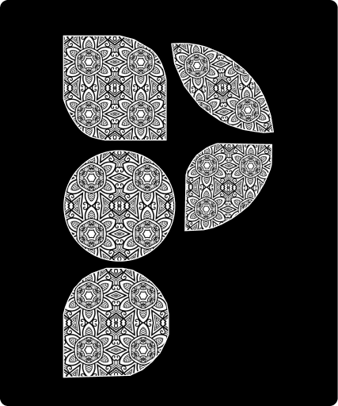
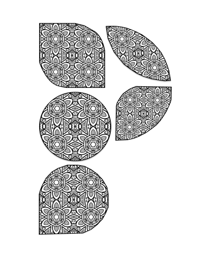
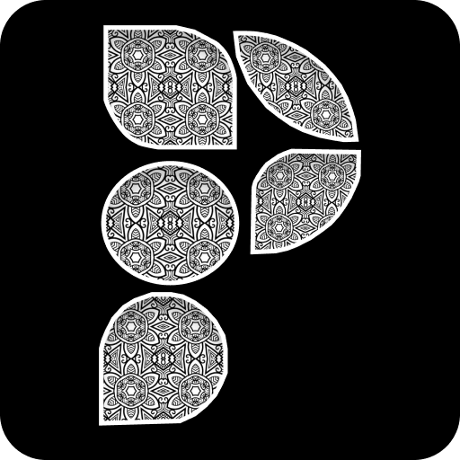

LOGO VARIATIONS
These logos depicts my Artistic side and my favourite art "Mandala" inside my initial P.

B & W LOGO
This is the primary logo,should be used on light mode.

INVERSE LOGO
This logo should be used on dark mode.

COLOR LOGO
This is colored version of the logo should be used with another color.

FAVICON LOGO
This logo will be displayed on the title of the website.